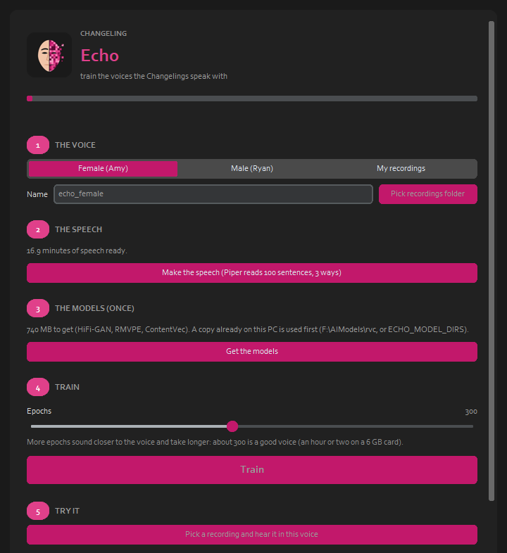

Use it

1
The voice
Female (Amy), Male (Ryan), or your own recordings.
2
The speech
Piper reads 100 sentences three ways: about 15 minutes, in under a minute.
3
The models
About 740 MB, once: only what training needs; a copy on the PC is used first.
4
Train
A completion bar with the epoch and the time left; about 300 epochs makes a good voice.
5
Try it
Hear a recording in the new voice.
6
Send it
To Imago Realtime and Mosaic Mask.